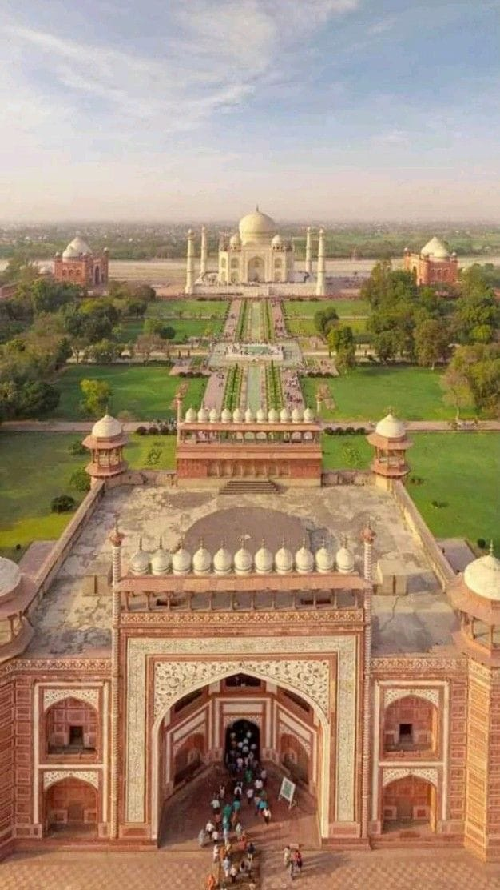
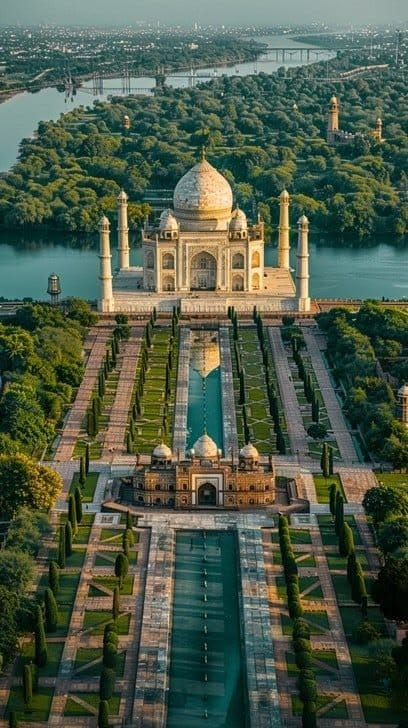
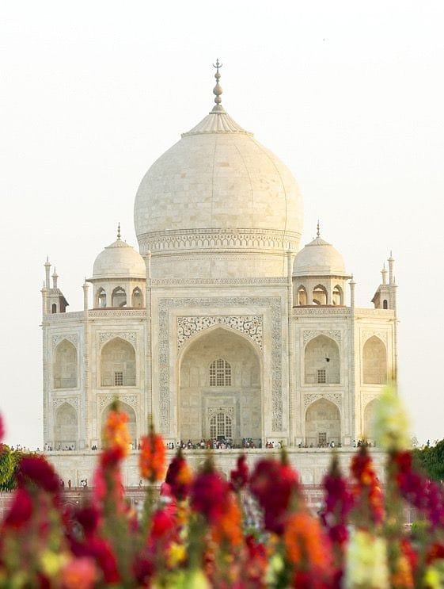

يُعتبر تاج محل واحدًا من أجمل المعالم المعمارية في العالم، ويقع في مدينة أغرا بالهند. بُني هذا الصرح العظيم في القرن السابع عشر بأمر من الإمبراطور المغولي شاه جهان تخليدًا لذكرى زوجته "ممتاز محل" التي كان يحبها بشدة. يتميز تاج محل بتصميمه الفريد المصنوع من الرخام الأبيض، والذي يتغير لونه مع تغير ضوء الشمس خلال اليوم، مما يمنحه منظرًا ساحرًا ومميزًا. يضم المبنى قبة ضخمة وحدائق واسعة ونوافير جميلة، كما تُزين جدرانه النقوش والزخارف الإسلامية والكتابات الفنية الرائعة. استغرق بناء تاج محل سنوات طويلة، وشارك في تشييده آلاف العمال والفنانين والمهندسين، ليصبح تحفة فنية تمثل قمة الإبداع المعماري في الحضارة المغولية. أُدرج تاج محل ضمن قائمة التراث العالمي لليونسكو، كما اختير ضمن عجائب الدنيا السبع الجديدة، ويستقبل ملايين الزوار سنويًا من مختلف أنحاء العالم.